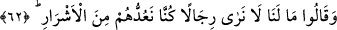
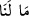
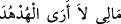
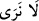
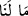
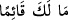
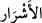
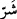
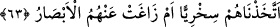

kimseye selîm kalp, faydalı ilim ve sâlih amelden başkası fayda vermez.
Ne kadar mal getirirsen o kadar götürürsün,
Eğer iflas etmiş isen, mahçupluk götürürsün.
62. (İnkârcılar) derler ki: Kendilerini dünyada iken kötülerden saydığımız
kimseleri burada niçin görmüyoruz?
Kureyş’in Ebû Cehil vb. ileri gelen azgınları olan “(inkârcılar)” cehennem ateşinde
“derler ki:” Bize bugün ne oldu ki “kendilerini dünyada iken kötülerden” merdûd
kimselerden “saydığımız kimseleri burada” yâni ateşte “niçin görmüyoruz?”
(__WORD__)’nın (__WORD__)’sı soru edatı ve mübtedâ; (__WORD__)’sı ise bunun haberidir. Yalnız bu istifham
edatı tıpkı (__WORD__) ifâdesinde olduğu gibi gerçek mânâsı üzere olmayıp
taaccüp ve hayret ifâde etmektedir. Çünkü akıllı birinin kendi durumundan suâl
etmesinin anlamı yoktur.
(__WORD__) ile nefyedilen fiil (__WORD__)’da bulunan fiil mânâsından haldir. Meselâ “Ayakta ne
yapıyorsun?” anlamına gelmek üzere (__WORD__) denir ki buna göre ifâdenin anlamı şu
olur: Birtakım adamları ateşte göremeyen bizler ne yapacağız? Yâni, birtakım adamları
ateşte görmeyen bizlerin durumu ne olacak?
(__WORD__)
kelimesi, (__WORD__)’in çoğulu olup herkesin kaçınıp uzak durduğu, rağbet etmediği
şeye denir. Nitekim herkesin arzulayıp rağbet ettiği şeylere de ‘hayır’ denmektedir.
Kureyş reisleri bu sözleriyle aşağı tabakadan sayıp dalga geçtikleri Suheyb-i Rûmî,
Bilâl-i Habeşî, Selmân-ı Fârisî, Habbâb ve Ammâr gibi fakir müslümanları
kasdediyorlardı. Öyle ki bu zevât, muhâcirlerin de düşkünlerinden olup müşrikler
bunlar hakkında “Allah, aramızdan şu adamları mı îman nimetine lâyık gördü?”
(el-En‘âm 6/53) dedikleri kimselerdi. Bunlara şerli demeleri iki şekilde açıklanabilir:
Ya hiçbir nitelik ve kalitesi bulunmayan aşağılık ve sefil kişiler anlamındadır -nitekim
“burası, malın en kötü (şerli) kısmıdır” denir- ya da kendi dinlerine karşı olmaları
hasebiyle onlara göre şerli olmuşlardır.
63. Alaya aldığımız onlar değil miydi? Yoksa (buradalar da) onları gözden mi
kaçırdık?
“Alaya aldığımız onlar değil miydi?